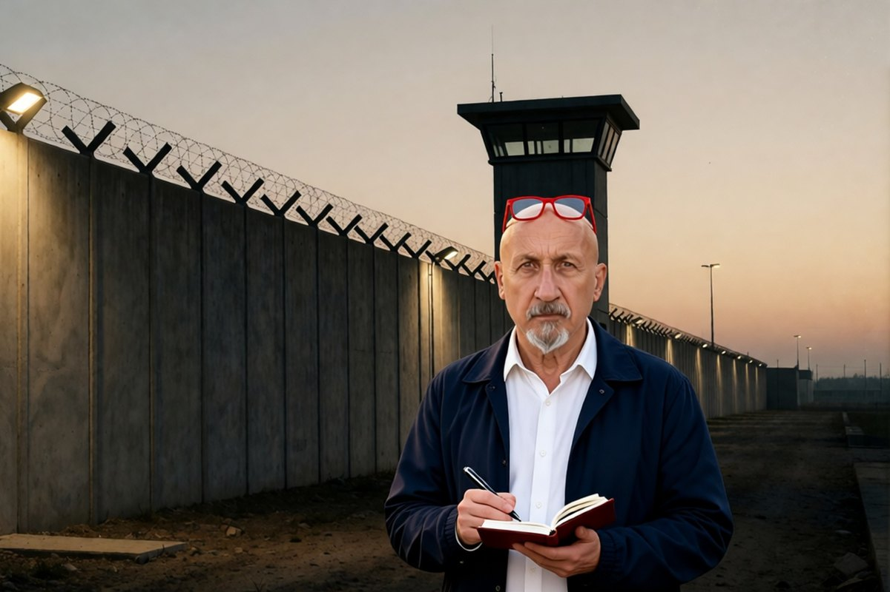

Cronaca · 30 ottobre 2026
Il serial killer che confessò gli omicidi di altri otto condannati

Ben Mohamed Ezzedine Sebai si accusò di 14 omicidi, e per quattro di quelli in carcere c'erano già altre persone. Lo Stato gli ha creduto per i delitti rimasti senza nome e non per quelli già chiusi.
di Franco Zanghì
Siamo in Puglia, fra le province di Bari, Taranto e Foggia, a metà degli anni Novanta. Donne anziane e sole, uccise in casa, sempre allo stesso modo: l'assassino entra, colpisce con un coltello o strangola, porta via qualche oggetto di valore e se ne va.
Nel settembre del 1997, a Palagianello, in provincia di Taranto, una ragazzina di 13 anni lo sorprende sulla scena e dà l'allarme. Lo arrestano. Si chiama Ben Mohamed Ezzedine Sebai, è tunisino, è entrato in Italia da clandestino e ha usato sette identità diverse. La Corte d'Assise di Foggia lo condanna a quattro ergastoli.
Fino a qui la giustizia ha funzionato. Il problema arriva dopo.
La confessione del 2005
Nel febbraio del 2005, in carcere, Sebai viene a sapere che un uomo condannato per uno di quegli omicidi, Vincenzo Donvito, si è tolto la vita in cella. E confessa. Si accusa di 14 omicidi, fra i quali quattro per i quali erano già state condannate altre persone: otto in tutto, gente povera della provincia di Taranto. Uno di loro, Giuseppe Tinelli, arrestato giovanissimo nel 1997, sta scontando l'ergastolo per due omicidi di donne anziane a Palagiano.
Lo mette anche per iscritto, e dice di aver conosciuto in carcere due dei condannati per uno di quei delitti. Secondo il servizio delle Iene che ha ricostruito la vicenda, e secondo i difensori, nella confessione ci sono dettagli che poteva conoscere soltanto l'assassino.
Creduto per metà
Qui la giustizia si divide in due. Un giudice di Lucera scrive che la confessione di Sebai è pienamente attendibile, e lo condanna per un omicidio che era rimasto senza colpevole. A Taranto, invece, la procura si spacca: per un delitto chiede la condanna di Sebai, per altri tre ne chiede l'assoluzione, perché, secondo quei magistrati, le sue parole non hanno riscontri.
Per i delitti rimasti senza nome la confessione è stata ritenuta credibile. Per quelli che un colpevole ce l'avevano già, no. Lo stesso uomo, le stesse parole.
A Tinelli la Corte d'appello di Potenza nega la revisione: prima, scrive, serve una condanna definitiva di Sebai per quei fatti. Ma nel dicembre del 2012 Sebai si toglie la vita nel carcere di Padova, e quella condanna non arriverà mai. Tinelli, intanto, aveva tentato due volte di uccidersi.
Le ragioni degli altri
Le obiezioni vanno dette. I magistrati che non credevano a Sebai pensavano che si fosse accusato per scagionare uomini conosciuti in carcere. E alcuni dei condannati, all'epoca, avevano confessato, salvo poi ritrattare sostenendo di essere stati picchiati.
Chi abbia ragione non spetta a un giornalista stabilirlo. Ma un sistema che crede allo stesso uomo per i delitti senza colpevole e non gli crede per quelli già chiusi ha un problema. E una revisione che dipende dalla condanna di un altro, quando l'altro è morto, non è una garanzia: è un vicolo cieco.
Perché questa storia non è un pezzo di museo
Alberto Stasi è stato condannato in via definitiva per l'omicidio di Chiara Poggi a Garlasco, e la sua difesa annuncia per novembre la richiesta di revisione, dopo la nuova inchiesta della procura di Pavia. Massimo Bossetti sconta l'ergastolo per l'omicidio di Yara Gambirasio: il 5 ottobre la Corte d'Assise di Bergamo ha respinto la richiesta della difesa di analizzare di nuovo i reperti, e gli avvocati annunciano ricorso.
Sono casi diversi, con prove diverse, e non stanno sullo stesso piano. Ma la domanda che pongono è la stessa: quanto è difficile, in Italia, rimettere in discussione una sentenza quando il dubbio c'è?
Qualche volta la porta si apre. Beniamino Zuncheddu, in Sardegna, è stato assolto in revisione dopo 33 anni di carcere. Trentatré. La posizione di chi scrive è questa: meglio un colpevole fuori che un innocente dentro, e quando i dubbi sono di questa misura la revisione non può essere un percorso a ostacoli lungo vent'anni. Verificare, finché quelle persone sono vive, è il minimo che si possa chiedere a uno Stato serio.
Fonti
- Le Iene, servizio di Antonino Monteleone e Marco Fubini sul «serial killer delle vecchiette», Mediaset Infinity
- La Gazzetta del Mezzogiorno, «Sebai attendibile, è serial killer anziane» e «Taranto, per serial killer vecchiette chiesta condanna a 20 anni»
- Camera dei deputati, interrogazione 5/00589 del 10 novembre 2008
- Corte&Media, «Ezzedine Sebai, il serial killer delle vecchiette», 1 marzo 2026
- LaCapitaleNews, sulla richiesta di revisione annunciata dalla difesa di Alberto Stasi, 29 ottobre 2026
- Open, «Caso Yara, no a nuove analisi», 5 ottobre 2026, e Tpi, 6 ottobre 2026
Alla data di pubblicazione non è stato possibile verificare se Giuseppe Tinelli sia ancora detenuto: il dato viene da una sola fonte. Non è stato trovato l'esito del procedimento di revisione di Vincenzo Faiuolo. La richiesta di revisione per Alberto Stasi è annunciata dalla difesa e non ancora depositata.